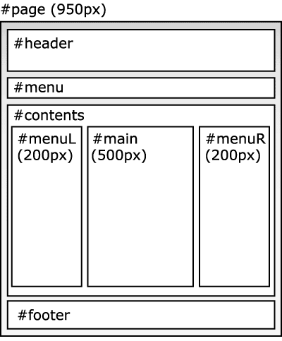

左メニューのテンプレート
親しみやすいオーソドックスな基本テンプレート
オーソドックスな左サイドメニューのテンプレートパターンです。最も一般的なパターンなので、ユーザーが迷うことがありません。上のイメージ画像をサイトに合わせて入れ替えれば、ガラリと雰囲気がかわり、オリジナルデザインに変身します。
サブカテゴリ
項目スペースL
サブカテゴリ
項目スペースR
サブカテゴリ
項目スペース
サブカテゴリ
項目スペース
テンプレートの利用について
- HTML・CSSの基本を理解している人向けです。
- デザイン・レイアウトはCSSファイルにまとめて記述してあります。
- 個人サイト・商用サイト・企業サイトでご利用いただけます。
- 教育機関での教材利用も可です。連絡の必要もございません。
- このテンプレートには最下部にCSSデザインテンプレートへの著作リンクがあります。
- このテンプレートを利用し、第三者のサイトを制作することで金銭を得る行為全てを禁じます。制作代行で使っちゃダメよ。
- このテンプレートを利用することで被った損害又は損失等について、当サイト・配布者は一切の責任を負いません。
HTMLの構成
ページの基本構成は次のようになっています。文章やHTMLを変更する際は、そのHTMLファイルの中で<div id="ID名">となっている箇所を探して修正してください。
テンプレートの修正について
レイアウトの崩れについて
text.css内で横幅：widthや余白:paddingなどを変更すると、レイアウトが大きく崩れる場合があります。CSSのテンプレートを利用する場合は、幅指定などを変更しないほうが無難です。
他サイトからHTMLやCSSの一部をコピーして利用すると、同様にレイアウトが崩れる場合があります。コピーしてきたHTMLとCSSのID名・クラス名が被っている可能性がありますので変更してください。HTML要素へのCSS記述が被っていると、CSS自体を修正するしかありません。これもしないほうが無難です。
各ブラウザでレイアウトが崩れないように気をつけて作っていますが、古るすぎるブラウザ・マイナーなブラウザなどでは、同じように表示されないことはあります。
作業手順
次のような手順でテンプレートを修正してホームページを作ると無駄がありません。
- 失敗しても作り直しができるよう、ダウンロードしたテンプレートをコピーして、バックアップをとる。
- サイト名・社名画像をいえれかえる。画像を作らない場合は、そのまま文字を入力（画面左上）。
- <head></head>内の<title>やキーワードなどを書き換える。
- カテゴリに合わせて、上部メニューを変更する。
- 著作権表示Copyright (c) 20XX yournameを社名に合わせて書き換える（画面最下部）。
- 最初から入力されている文章などを削除して内容を消す。
- 6を基本テンプレートとして、後から使えるようにとっておく。
- 6の基本テンプレートをコピーして新しくページを作る。